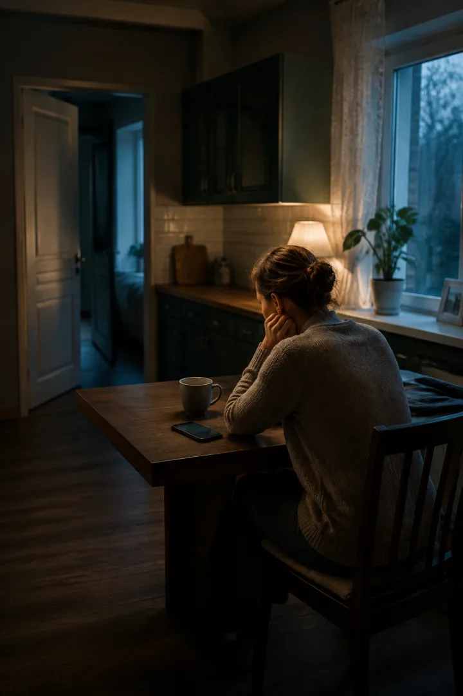
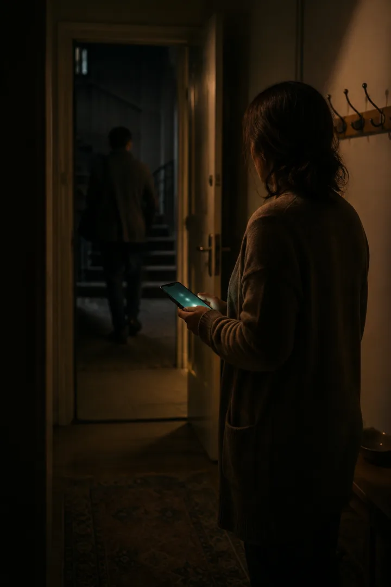
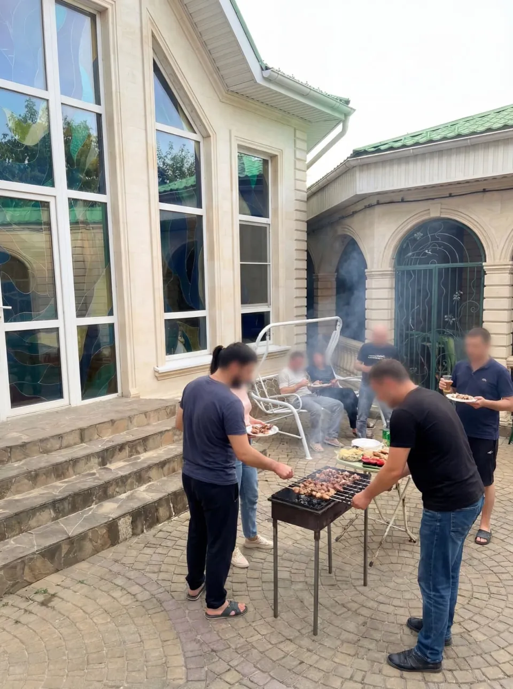
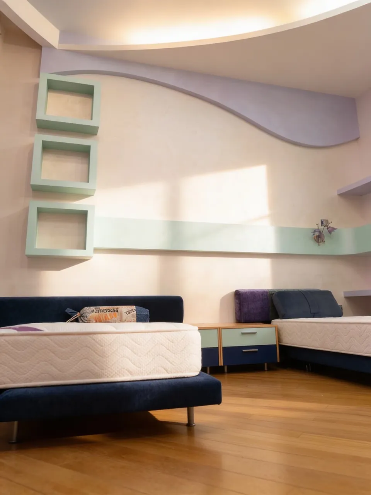
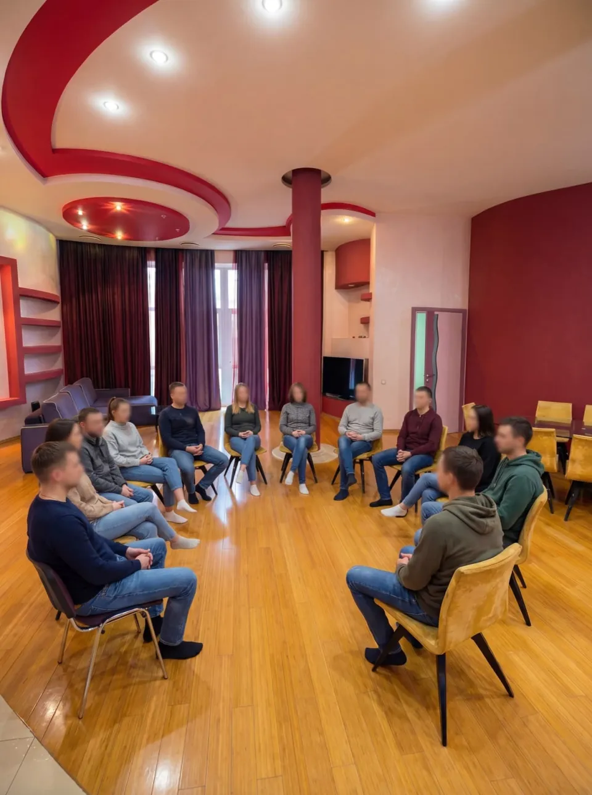
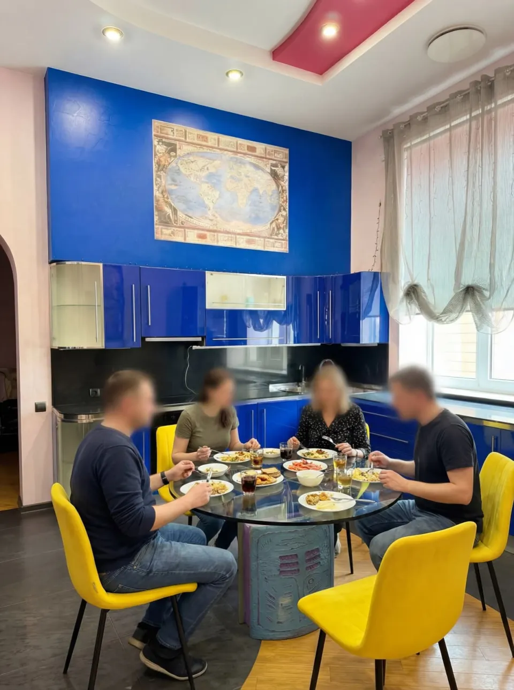
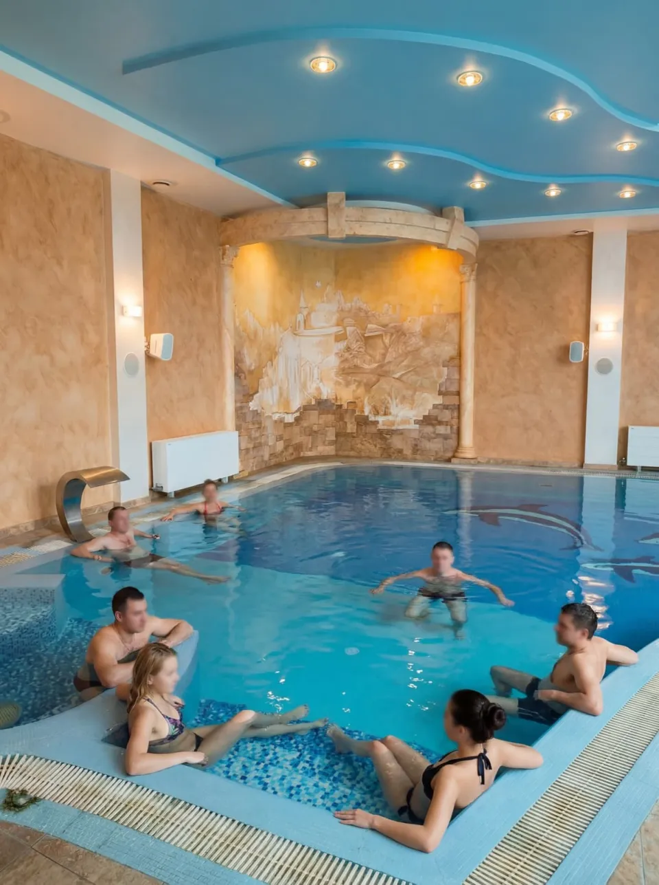
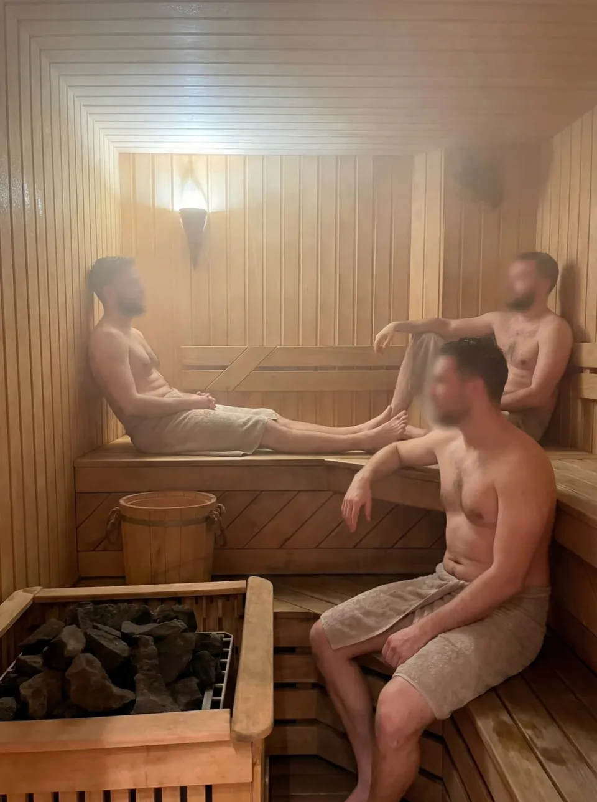

Помощь родственнику
Помощь семье при зависимости · Ставрополь
Если уговоры и контроль не работают, позвоните. За один разговор разберём, что можно сделать сегодня, и честно скажем, чем можем помочь, а чем нет.
+7 928 963-32-80Вы это уже читали в рекламе
Гарантия избавления от зависимости
Зависимость не гарантируется ни в одну сторону. Мы отвечаем за то, что в наших руках: режим, ежедневную работу с поведением и участие семьи.
95% ремиссии
Никто не показывает, как посчитал. Мы не публикуем проценты, пока не можем показать, откуда они взялись.
Вылечим за 21 день
Снять острое состояние можно за дни. Изменить то, что раз за разом возвращает к употреблению, за дни нельзя.
Повторный курс бесплатно, если сорвётся
Срыв не повод для торга. Мы заранее проговариваем с семьёй, что делаем, если он случится, и не прячем это в сноску.
Вместо обещаний ниже показываем, как здесь проходит день. Это можно проверить: приехать и посмотреть.
Начнём с главного
Выберите то, что ближе. Страница подстроится под вашу ситуацию.



Помощь родственнику
Вместо процентов
Так выглядит будний день резидента. Точное расписание зависит от этапа программы. Лица на фотографиях скрыты ради конфиденциальности.
День начинается одинаково для всех. Это первое, что возвращает контроль над собой.

Как прошла ночь, что сегодня в фокусе. Здесь учатся говорить о себе без оправданий.

Разбор того, что именно возвращает к употреблению: ситуации, люди, чувства, привычные ходы.
Готовят и убирают сами, по очереди. Ответственность за общий быт входит в программу.

Тело восстанавливается медленнее, чем хочется. Нагрузка и отдых расписаны, а не оставлены на настроение.

Разбор дня: что получилось, где сорвалось, что завтра. Без разбора день не считается прожитым.

Шашлыки, разговоры, простые дела вместе. Так возвращается чувство, что рядом есть люди.
Ночь без телефона, без «ещё чуть-чуть». Утром всё начнётся снова, и в этом смысл.
Хотите увидеть это не на фотографиях? Спросите о визите в центр.
Спросить о визитеНе просто «оставьте заявку»
Не нужно заранее знать диагноз, программу или правильные слова. Расскажите, что происходит дома.
Позвонить сейчас+7 928 963-32-80Отвечаем [время ответа: подтвердить]
Что употребляет близкий, как давно длится кризис и есть ли признаки, при которых нельзя ждать.
Если острый этап требует врача, подскажем маршрут. Затем объясним, как не потерять время между медициной и реабилитацией.
Поможем выбрать спокойную позицию без угроз, пустых обещаний и бесконечного торга.
Честная граница услуг
Когда нужна медицина
Состояние оценивают медицинские специалисты. Помощь оказывается по показаниям и только после консультации.
Медицинский этап: партнёр ООО «Амадея» [лицензия и адрес по документам]
Когда начинается реабилитация
Режим, поддержка, работа с поведением, ответственностью и возвращением к обычной жизни. Это делает «ОСНОВА».
Реабилитационный этап: центр «ОСНОВА», Ставрополь
Не знаете, с какого этапа начинать? Это нормально. Позвоните, разберём вместе.
Без звёздочек
Цену называем до поступления, а не после. Рассрочку и варианты оплаты обсуждаем по телефону.
[стоимость] ₽ в месяц
Программа: [срок]
Медицинские услуги не входят и оплачиваются отдельно медицинской организации.
Когда трудно решиться
Можно не рассказывать всё сразу. Начните с одного вопроса.
Позвонить конфиденциально+7 928 963-32-80Да. Первый разговор может пройти только с родственником. Мы не обещаем согласие близкого, но поможем понять доступные действия и подготовить разговор без давления.
Да. Вы можете сначала описать ситуацию сами. Это не обязывает вас принимать решение или сразу привозить человека в центр.
Срыв не делает помощь бессмысленной. Мы заранее договариваемся с семьёй, что делать в этом случае, и разбираем, что предшествовало возвращению к употреблению.
Клиника снимает острое состояние. Реабилитация занимается тем, что к нему привело: поведением, окружением, привычными ходами. Медицинский этап у нас проводит лицензированный партнёр, реабилитацию ведёт «ОСНОВА».
Номер используется только для ответа на ваше обращение и обрабатывается по опубликованной Политике обработки персональных данных.
Можно начать без него
Позвоните сами. Даже если близкий пока отказывается признавать проблему.
Позвонить конфиденциально Конфиденциальный звонок+7 928 963-32-80